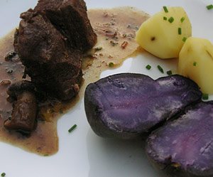

Boeuf Bourgignonne
5 von 61,2 Kilo sehr grob geschnittenes Rindsragout (300 g pro Person) und 2 Kalbsfussscheiben gut anbraten, das Fleisch kurz aus dem Bräter heraus nehmen, einige ganze geschälte Saucenzwiebeln und 150 g Speck ebenfalls andämpfen. Das Fleisch wieder beigeben und mit etwas Mehl bestäuben. Mit 5 dl Burgunder und etwa 5 dl Kalbsfond (bis das Fleisch knapp bedeckt ist) ablöschen, etwas Thymian, ein Lorbeerblatt und einige Petersilienzweige beigeben, bei geschlossenem Deckel sanft köcheln lassen. Nach einer Stunde 250 g ganze kleine Champignons beigeben, eine weitere Stunde weiter kochen bis das Fleisch gar ist, abschmecken und servieren.
